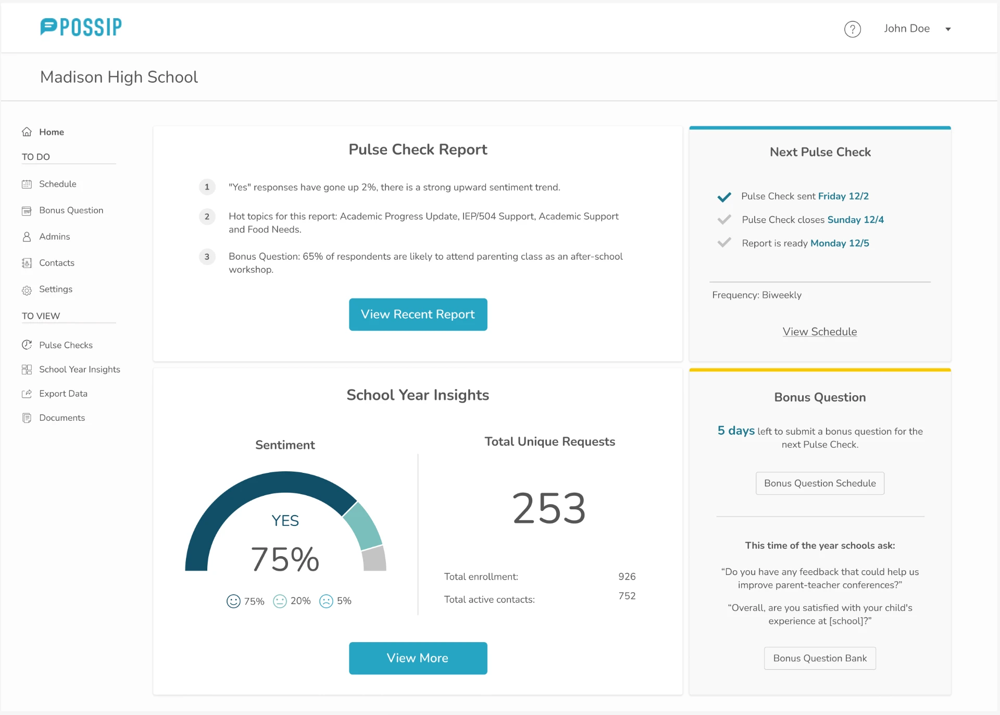
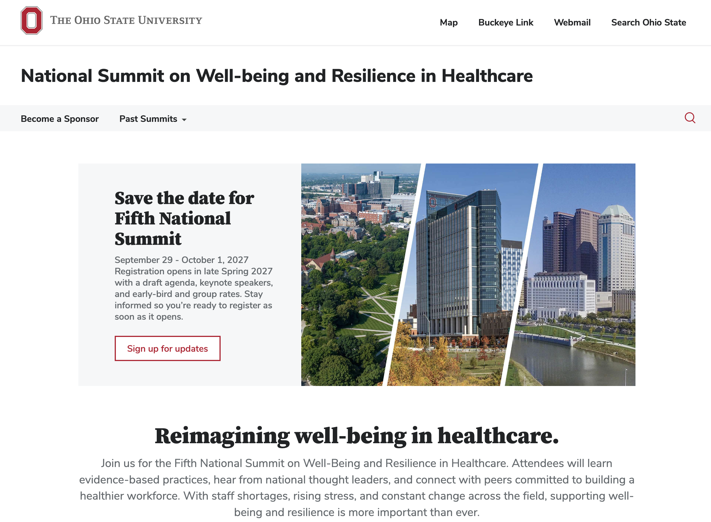

UX Research & UX Design
Navigation: Research and design
A research-led redesign of Possip's navigation and dashboards to surface the right insights for school and district leaders.
Read the case study →Selected work

UX Research & UX Design
A research-led redesign of Possip's navigation and dashboards to surface the right insights for school and district leaders.
Read the case study →
UX Design
Restructuring and redesigning the Clinician Well-Being Summit website with Ohio State's BUX design system.
Read the case study →